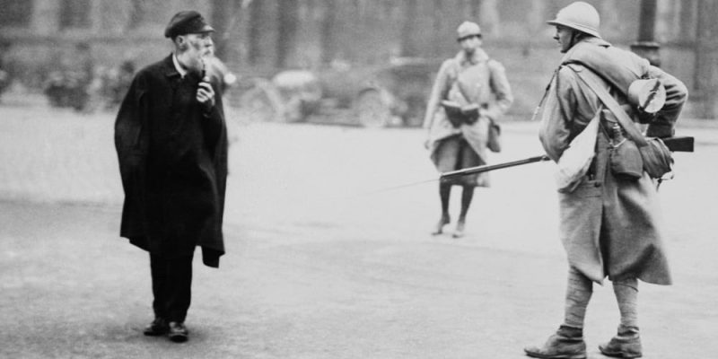

🚨 Simulador: Estado de Sitio y Restricciones
Calcula el riesgo de circulación y posibles multas durante toque de queda.
Control de Circulación

Hora de inicio del Toque de Queda (Formato 0-23):
Hora en la que estás en la calle (Formato 0-23):
¿Tienes pase de circulación médico/estratégico? (1 = Sí, 0 = No):
Multa por hora de infracción (Bs.):
Evaluar Riesgo
Limpiar